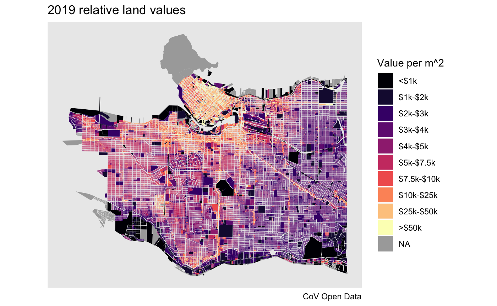

library(VancouvR)
library(dplyr)
#>
#> Attaching package: 'dplyr'
#> The following objects are masked from 'package:stats':
#>
#> filter, lag
#> The following objects are masked from 'package:base':
#>
#> intersect, setdiff, setequal, union
library(tidyr)
library(ggplot2)Get metadata for tax report
get_cov_metadata("property-tax-report") %>%
tail(10)
#> # A tibble: 10 x 4
#> name type label description
#> <chr> <chr> <chr> <chr>
#> 1 current_land_v… int CURRENT_LAND_… The market value of the fee simple inte…
#> 2 current_improv… int CURRENT_IMPRO… The market value of the fee simple inte…
#> 3 tax_assessment… text TAX_ASSESSMEN… Year in effect for Current_Land_Value, …
#> 4 previous_land_… int PREVIOUS_LAND… This value is for the previous assessme…
#> 5 previous_impro… int PREVIOUS_IMPR… This value is for the previous assessme…
#> 6 year_built text YEAR_BUILT Year that the property was built. Assig…
#> 7 big_improvemen… text BIG_IMPROVEME… Year of major improvement to the proper…
#> 8 tax_levy doub… TAX_LEVY This is the total taxes printed on the …
#> 9 neighbourhood_… text NEIGHBOURHOOD… This is a 3-digit number assigned by BC…
#> 10 report_year text REPORT_YEAR Report yearGet an overview of land values in RS zones
search_cov_datasets("property-tax") %>%
pull(dataset_id) %>%
lapply(function(ds)
aggregate_cov_data(ds,
group_by="tax_assessment_year as Year",
where="zoning_district like 'RS-'",
select="sum(current_land_value) as Land, sum(current_improvement_value) as Building")) %>%
bind_rows() %>%
mutate(Date=as.Date(paste0(as.integer(Year)-1,"-07-01"))) %>%
pivot_longer(c("Land","Building")) %>%
ggplot(aes(x=Year,y=value,color=name,group=name)) +
geom_line() +
scale_y_continuous(labels=function(x)paste0("$",x/1000000000,"Bn")) +
labs(title="City of Vancouver RS zoned land values",color="",y="Aggregate value (nominal)")
#> Downloading data from CoV Open Data portal
#> Downloading data from CoV Open Data portal
#> Downloading data from CoV Open Data portal
#> Downloading data from CoV Open Data portal
Get data for property tax report and property polygons
tax_data <- get_cov_data(dataset_id = "property-tax-report",
where="tax_assessment_year='2021'",
select = "current_land_value, land_coordinate as tax_coord")
#> Downloading data from CoV Open Data portal
#> Warning in mask$eval_all_mutate(quo): NAs introduced by coercion to integer
#> range
property_polygons <- get_cov_data(dataset_id="property-parcel-polygons",format = "geojson") %>%
sf::st_transform(26910)
#> Downloading data from CoV Open Data portalCompute and plot relative land values
plot_data <- property_polygons %>%
left_join(tax_data %>% group_by(tax_coord) %>% summarize(current_land_value=sum(current_land_value)),by="tax_coord") %>%
mutate(rlv=current_land_value/as.numeric(sf::st_area(geometry))) %>%
mutate(rlvd=cut(rlv,breaks=c(-Inf,1000,2000,3000,4000,5000,7500,10000,25000,50000,Inf),
labels=c("<$1k","$1k-$2k","$2k-$3k","$3k-$4k","$4k-$5k","$5k-$7.5k","$7.5k-$10k","$10k-$25k","$25k-$50k",">$50k"),
ordered_result = TRUE))
ggplot(plot_data) +
geom_sf(aes(fill=rlvd),color=NA) +
scale_fill_viridis_d(option="magma",na.value="darkgrey") +
labs(title="July 2020 relative land values",fill="Value per m^2",caption="CoV Open Data") +
coord_sf(datum=NA)